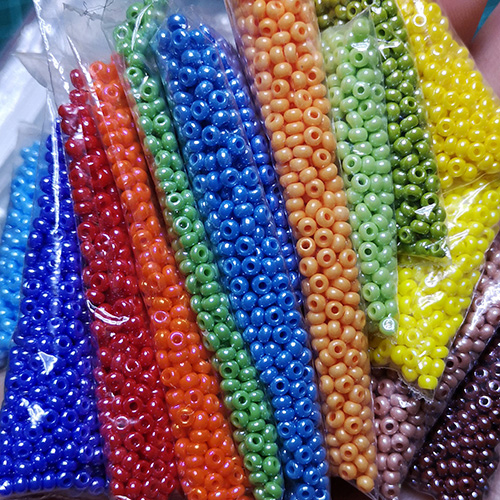
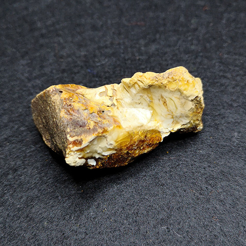
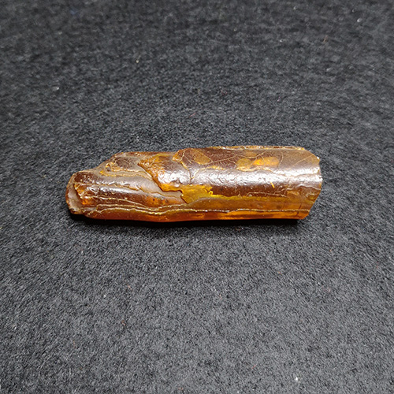

Выбор материалов для рукоделия весьма велик, и в плане разнообразия и ассортимента. Синтетичесике, натуральные или из смешанного сырья — всё можно найти и сравнить в сети, посмотреть отзывы об их качестве, удобстве использования, и уже после принять решение о покупке.
Покупка материалов. Когда мне чего-то не хватает в процессе работы, то посещаю рукодельный магазин. А если нужно пополнить запасы или для изготовления необходим большой объем материалов, то я иду в интернет-магазины.
Думаю, что добрая часть рукодельниц использует такой прием, как сходить в магазин пощупать и оценить, а потом купить онлайн с хорошей экономией.
Бисер
Он многогранен во всех смыслах.
На данный момент существует минимум два десятка вида. Производится в основном из стекла.
В 5-6 классах на уроках домоводства с помощью медной проволоки и бисера делали целые букетики, крепили на английскую булавку и получались броши. Позже я начала делать браслеты мозаичным плетением. Использовала китайский бисер, который сначала приходилось сортировать по размеру, а потом начинать плести.
Чуть больше десяти лет назад узнала о японском бисере TOHO (тохо). Это был праздник для глаз, разорение для кошелька и целый квест по поиску. Это бисер настолько ровный, что работа с ним приносит неописуемое удовольствие. Сейчас его можно найти в любом рукодельном магазине по адекватной цене.
Чешский бисер PRECIOSA очень приближен по качеству к японскому. Некоторые виды иногда путаю, если не вижу бирку. Он более приплюснут и имеет узкое отверстие. Готовая работа из такого бисера так же выглядит великолепно.
Крупным старым бусам из прессованного коралла, амброида или пластмассы можно дать еще один шанс блеснуть - оплести бисером. Работа кропотливая, но результат будет того стоить.
Бисер ZLATKA - тот самый китайский, который я держу в закромах на всякий случай. Им можно смело декорировать обычную сумку шоппер. И серый мешок с ручками может превратится в любимую сумку. А самую простую офисную рубашки освежить россыпью крупного бисера пастельных тонов на уголках воротника и манжетах.

{kind=link}
PRECIOSA
{kind=link}
{kind=link}
{kind=link}
{kind=link}
Бусы и пуговицы
Что же такого в этих нехитрых материалах? С их помощью мы становимся индивидуальными.
Бусы — украшение на шею в одну или несколько нитей. Изготавливаются из огромного количества материалов — дерева, стекла, пластика, природных минералов, шерсти и даже костей животных. Сегодня бусы продаются поштучно и используются как материал для декорирования. Возьмем самый простой летний топ, который носите только дома — горсть небольших цветных бусинок и вы готовы пойти в нем на встречу с друзьями.
Пуговица же в основном носит утилитарную функцию — это застежка, на втором месте декоративная — украшение. Совмещение этих функций позволяет по-новому взглянуть на вещь. К примеру — пальто простого кроя красного цвета с пуговицами в тон. Заменим пуговицы. Варианты: насыщенно-красные, черные, красно- черные. В каждом случае пальто будет выглядеть иначе, благодаря декоративной функции пуговиц.
С помощью бусинок и плоских пуговиц можно сделать декоративные пуговицы на свой вкус, брошь, аксессуар для волос и многое другое, что вам подскажет фантазия.
А вы знали, что коллекционирование и изучение простых и форменных пуговиц, а так же их внешнего вида, надписей, изображений, материала, времени и места изготовления называется филобутонистика.

описание
{kind=link}
{kind=link}

описание
{kind=link}
Янтарь
Есть три вида: настоящий, прессованный и имитация.
Настоящий янтарь. Это невзрачный, различной формы и размера, с гладкой, шероховатой, ребристой или потрескавшейся поверхностью, грязно-горчичного, бежевого, оранжевого и прочего цвета.
Любой кусочек оказавшийся в руках вызывает дикий интерес узнать какой он внутри: цвет, есть ли в нем вкрапления, пусть даже фрагменты почвы или растений, пузырьки с жидкостью (и такое попадалось). Иногда оказывается чуть ли не бесцветным, как стеклышко или же насыщенного чайного цвета, прозрачным желтым и с дымкой внутри, полностью непрозрачным, но с рисунком. Всего и не перечислить. Каждый раз это что-то новое. Вообще существует около 400 оттенков для янтаря.

{kind=link}
описание
{kind=link}
{kind=link}
{kind=link}
{kind=link}
Прессованный янтарь — это амброид. Он тоже натуральный, но уже с измененной химической структурой. Берутся отходы от обработки: обрезки, осколки, обломки, в том числе и опилки, плюс материал, который не пригоден к обработке по размеру или цвету и все перемалывается в порошок. Под воздействием высокой температуры и давления этот порошок плавиться и превращается в тягучую массу. При этом никаких связующих веществ не добавляется. В итоге с помощью пресс-форм получаются заготовки для бижутерии, в том числе ювелирной, для изготовления сувениров — фигурки, шахматы, миниатюрные копии достопримечательностей, декора помещений и т.д.
Имитация. В настоящее время существует несколько разновидностей: каури, копал, фатуран, полиберн, бернит, бакелит, целлулоид, казеин, акрил, полиэстер и др.
Интересно то, что копал — смола растений из семейства бобовых, а каури выделяют разновидности хвойных араукарий, которые являются живыми ископаемыми. Фатуран является смесью из отходов янтаря и смол других растений, которую грели, а затем прессовали. Изобретен этот материал был в начале 18 века. До нашего времени рецепт фатурана не дошел. Если вам попадутся бусы или иное изделие, то в 90% это может он быть синтетический или же крашеный бакелит, производство которого некий предприимчивый доктор Траун из Гамбурга в начале 20 века превратил в доходный бизнес.
Остальные участники списка имитаций, это синтетические материалы и некоторые из них полученны на основе натурального сырья.
{kind=link}

описание
{kind=link}

{kind=link}
описание
{kind=link}
Ленты
Если бы не моя маленькая племянница с роскошной длинной шевелюрой, то я б и не обратила внимание на заколочки и резиночки из лент.
Этот материал относится к декоративно-отделочным. Их пришивают и завязывают, обшивают и вышивают. Из лент делают различные аксессуары, в том числе для волос. Впрочем, с волос все и началось. Модницы Древней Греции и Рима фиксировали и одновременно украшали прически ленточками из ткани.
Из атласных лент получаются действительно эффектные аксессуары для волос в виде цветов и бантиков. Но я столкнулась с проблемой — затяжки в процессе использования. Когда вы покупаете пару заколок или резинок за 200-300 рублей, чтобы украсить роскошные косы или хвостики своей дочке, а через пару недель носки в сад или школу они теряют свой вид из-за затяжек, согласитесь, приятного мало. Затяжки получаются из-за способа ткачества полотна. Так называемое атласное переплетение, когда уток выводится на лицевую сторону через пять или более нитей основы, что бы получить эту особую гладкую поверхность. А вот изнанка ленты имеет рисунок чем-то напоминающий соты и точечный блеск. Сделать затяжку на изнанке сложнее. Я попробовала использовать ленту наоборот. Результат порадовал.
Репсовая лента просто находка для бантиков. Она хорошо держит форму и не так сильно мнется, как атласная. А еще эта лента хорошо держит объем в складках.
Кстати, репс и атлас очень хорошо смотрятся вместе. Сложные лепесточки из репсовой ленты дают дополнительный эффект объема.

описание

описание
описание
описание
описание
Фетр
Это нетканый многофункциональный и практичный материал.
Существует несколько видов фетра. Есть чистошерстяной, полушерстяной (60% шерсть, 40% вискоза или акрил), синтетический(акрил, полиэстер, вискоза) и эко-фетр (из переработанного вторсырья). У каждого вида свои плюсы и минусы. А качество и срок службы готового изделия будет зависеть от выбранного материала.
Из фетра можно сделать игрушки и книжки-развивалки для детишек, головные уборы, сумочки, чехлы для телефонов и ноутбуков, всевозможные сувениры, украшения, аксессуары и многое другое.
Его удобно раскраивать и не осыпаются края, что позволяет делать тонкий петельный шов. Я использую фетр в изготовлении чехлов для сотовых телефонов и мини планшетов, для ободков с ушками и нарядов для куклы. Но в основном делаю объемные и декорированные магнитики. При компактном раскрое отходов от него минимум. Все обрезки складываются в отдельный пакетик и тоже используются.
описание
описание
описание
описание
описание